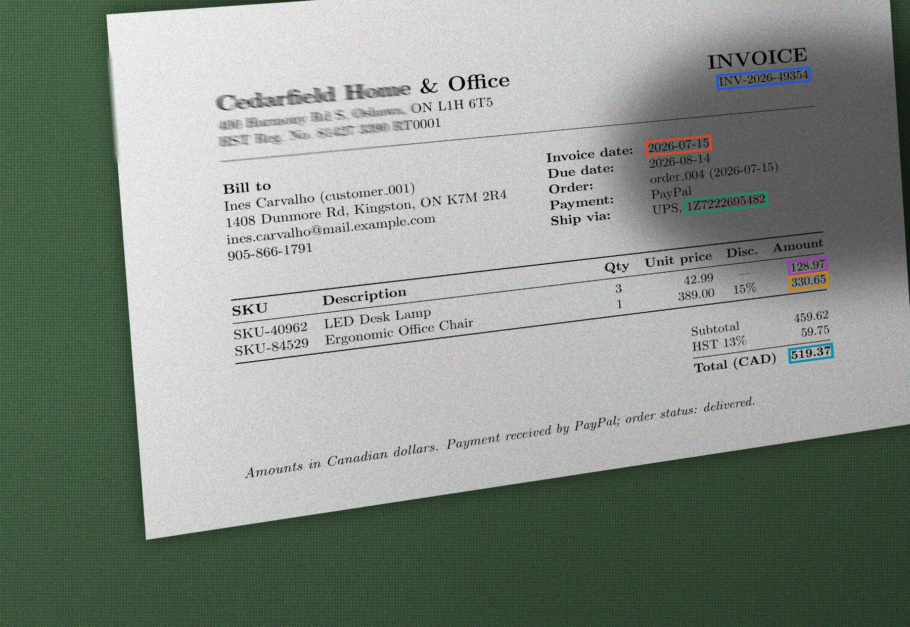
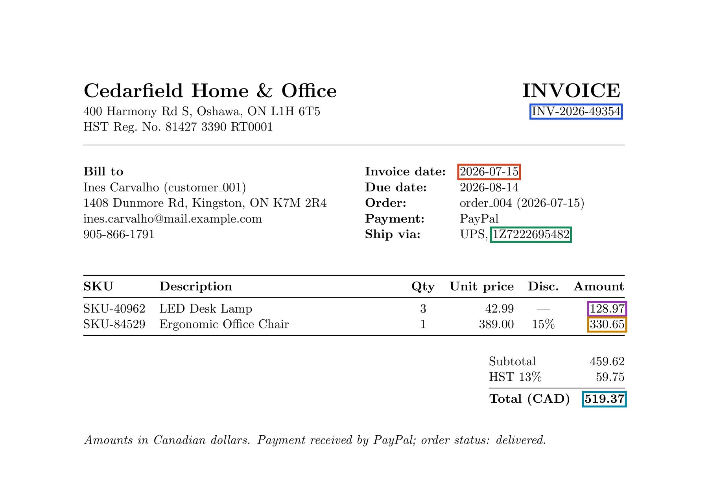
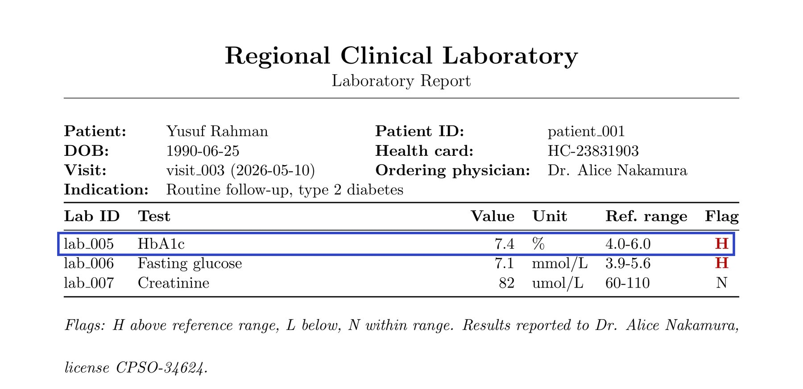
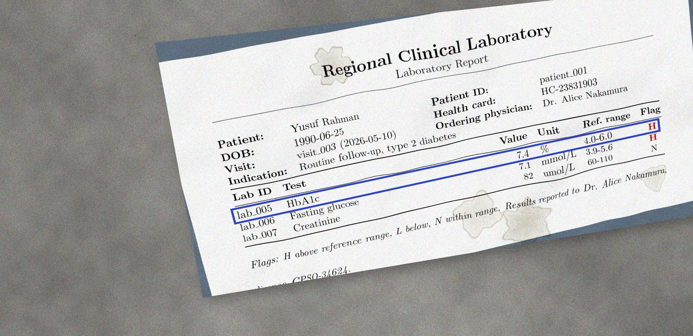
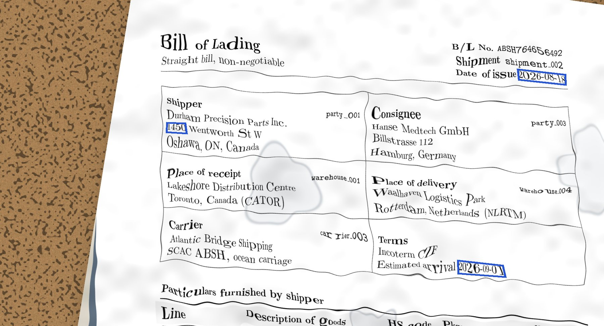

Healthcare · Education · Commerce · Logistics · Your Domain
Generated documents for AI training and evaluation, each with an answer key known by construction.


CleanAfter captureDrag across the page. The same six boxes are carried through the warp, not re-detected.
Six parametric stages
Open-weight LLMs write the content. Code assigns the identifiers, resolves the joins and writes the answer key. Follow record lab_005 through every stage.
A prompt and a vertical topic seed yield a domain description.
“Outpatient clinical records: patients, physicians, visits, and the prescriptions and lab results filed under each visit.”
The description yields a linked set of schemas. Graph complexity is set by parameter.
Each class is populated under distribution statistics and value constraints.
| object_id | lab_005 |
|---|---|
| class | LabResult |
| test | HbA1c |
| value | 7.4 |
| unit | % |
| reference_range | 4.0-6.0 |
| flag | H |
| visit_id → | visit_003 |
Code assembles the records into a join graph, one per document.
Each join graph is rendered as a page; layout and writing style are drawn from a parameterised range.

Seeded distortion degrades the page. The box is carried through the warp, so the annotation is unaffected.

Every page arrives with the records and joins it prints, written by code from the stages before it.
Distortion
One parameter samples a seeded recipe of capture effects. Every box moves with the page.
Recipes
A recipe is a seeded list of effects. The same recipe produces the same page, every time, and the page keeps its answer key.

Written by code before the page was rendered. Distortion does not change it.
Boxed values and their record fields
Page manifest: records and joins on the page
Effects
Each one is applied to the same lab report at maximum severity. Select an effect to compare it with the clean page.
Evaluation
The generated corpus recovers the rankings of public benchmarks. A larger model reads more fields but recovers fewer joins.
Field accuracy by OCR source; join and record recall with Mistral OCR.
| Extractor | PaddleOCR | DeepSeek-OCR | Mistral | Join recall | Record recall |
|---|---|---|---|---|---|
| Gemma 3 4B | 0.777 | 0.765 | 0.772 | 0.571 | 24.4% |
| Gemma 3 27B | 0.896 | 0.885 | 0.926 | 0.388 | 65.0% |
| Qwen3 8B | 0.907 | 0.927 | 0.955 | 0.918 | 82.1% |
| Qwen3 32B | 0.934 | 0.936 | 0.981 | 0.959 | 90.2% |
| DeepSeek flash | 0.919 | 0.912 | 0.954 | 0.571 | 74.0% |
| DeepSeek pro | 0.924 | 0.908 | 0.959 | 0.653 | 78.0% |
Gemma 3, 4B → 27B, Mistral OCR.
Agentic workflows
An agent reads the page, extracts the fields and links the records. The answer key scores each step separately.
accuracy per OCR source
field accuracy
join and record recall